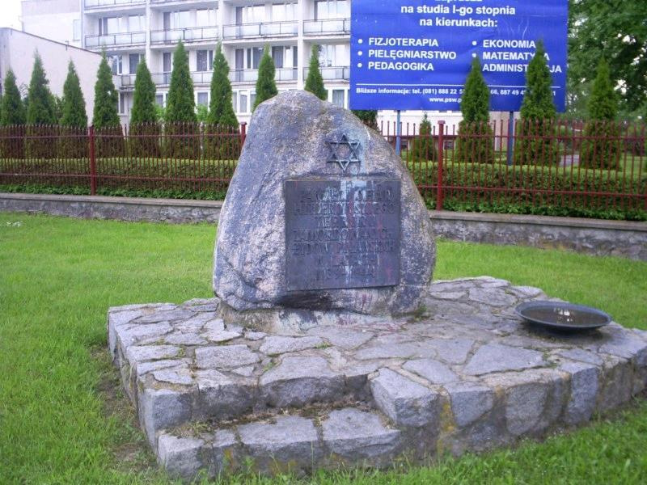
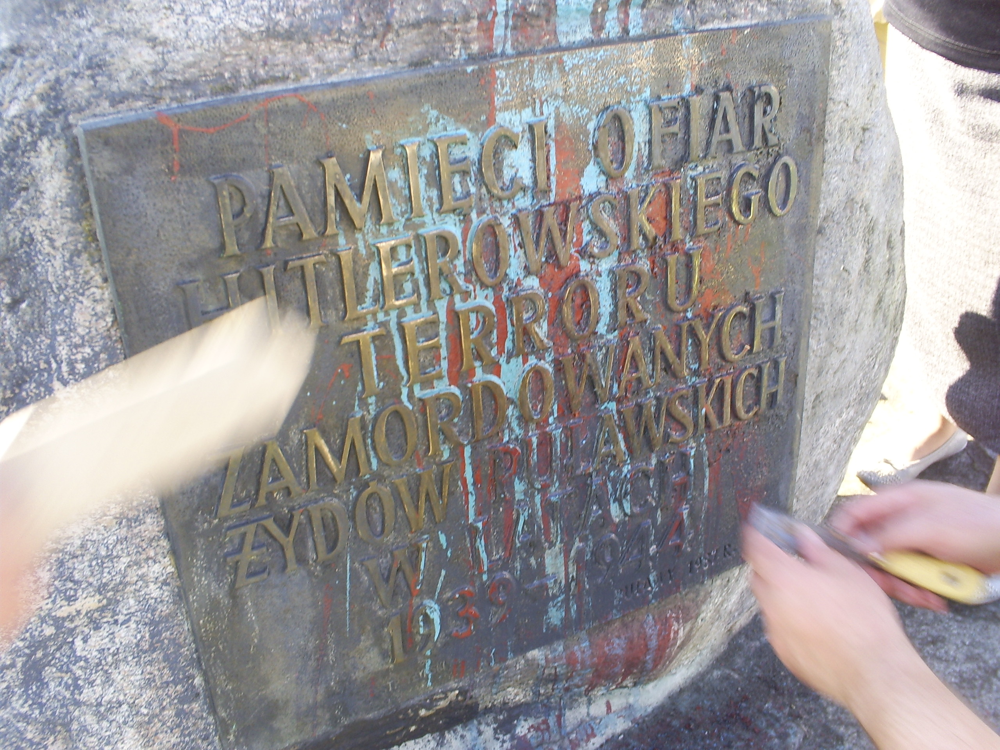

Powrót do korzeni wiary - Pastor Kościoła Niezależnych Metodystów zakłada grupę mesjańską w Puławach
Powrót do korzeni wiary
Pastor Kościoła Niezależnych Metodystów zakłada grupę mesjańską w Puławach
Urodziłem się w Puławach w rodzinie nie stroniącej od kieliszka. Ojciec mój był oficerem lotnictwa i zaprawiał się w boju ze spirytusem lotniczym, który w końcu rozłożył go na łopatki. Ja przyrzekałem sobie, że nie będę jak moi rodzice, ale jakże się myliłem. Już w wieku 12 lat upiłem się po raz pierwszy, a w wieku lat 16 byłem uzależniony od alkoholu.
Rodzice moi tak jak potrafili wychowywali mnie w tradycji katolickiej, byłem ochrzczony i u I Komunii Św., byłem bierzmowany, a nawet byłem ministrantem. Jednak czegoś w moim życiu brakowało. Powstała pustka, którą dziś traktuję jako pustkę na kształt Boga. Pustkę tą próbowałem skutecznie zapełnić alkoholem. Był taki czas, że chciałem zostać księdzem, lecz wiele czynników przeszkodziło temu przedsięwzięciu. Pod koniec 2 klasy szkoły kolejowej wyleciałem za picie, co nie przeszkodziło mi przyjąć się na PKP jako pracownik. Na PKP przepracowałem z przerwami od 1984 do 1990 r. skąd poszedłem na rentę, min. przez swoje picie.
Nim poszedłem na rentę wylądowałem w szpitalu psychiatrycznym po 20 dniowym ciągu, kiedy po prostu zapomniałem iść do pracy. Tam też spotkałem JEZUSA i zostałem uwolniony od nałogów. 27 maja 1990 r. poszedłem wraz z kolegą ze szpitala do jednego z protestanckich Kościołów w Lublinie. Tam pierwszy raz w życiu zrozumiałem homilię. Po zakończeniu homilii było zaproszenie do wyjścia do przodu w celu pojednania się z Bogiem i przyjęciu wiarą poprzez modlitwę Jezusa Chrystusa do własnego życia.
Od tego momentu poczułem pokój w swoim sercu, wiedziałem, że moje grzechy zostały przebaczone. Po trzech dniach przestałem przeklinać. W trakcie mojego pobytu w szpitalu skorzystałem z przepustki i pojechałem na 10 dniowy obóz chrześcijański do Gorzowa Wlkp. Obóz ten zorganizował Zbór Kościoła Chrześcijan Wiary Ewangelicznej w Gorzowie. Pastor Krzysztof Zieliński zaprosił wielu ciekawych mówców ze Szwecji. Podczas jednego z nabożeństw zostałem napełniony Duchem Św. i zacząłem modlić się innymi językami. Było to niesamowite przeżycie. Poczułem się jakbym znalazł się w niebie i potężną Bożą miłość, której nigdy wcześniej nie zaznałem.
Niestety nie wiedziałem nic o chorobie alkoholowej, ale jakieś 1,5 mies. później wypiłem łyk taniego wina i znowu powróciło zniewolenie alkoholowe. Przez 8 lat mojego chrześcijańskiego życia nie otrzymałem fachowej pomocy. Kochałem Jezusa, ale piłem nadal (z krótszymi lub dłuższymi przerwami), ponieważ byłem w szponach uzależnienia. Ożeniłem się ze wspaniałą chrześcijanką, która po 1,5 roku naszego małżeństwa żona postanowiła ode mnie odejść i chwała Bogu, wtedy nastąpił punkt zwrotny w moim życiu.
Zacząłem się leczyć. Mimo nieudanych podejść do terapii, kiedy byłem już całkowicie bezsilny wobec alkoholu, 29.11.1998r. Jezus usłyszał moją modlitwę i zostałem uwolniony od przymusu picia, a rok później rzuciłem dzięki łasce Bożej papierosy. Żona po kilku miesiącach wróciła do mnie widząc u mnie zmianę. Nie było dla nas łatwo, ale dzięki Bożej pomocy i to przezwyciężyliśmy. Podjąłem na nowo terapię i ją ukończyłem. Gdy otrzymałem dyplom ukończenia terapii byłem zadowolony, gdyż była to (oprócz ukończenia Szkoły Podstawowej) jedyna rzecz, którą rozpocząłem i zakończyłem. Pomyślałem sobie, że drzwi są przede mną otwarte i praktycznie nie ma nic niemożliwego na mojej drodze życia. „Wszystko jest możliwe dla tego kto wierzy” w Jezusa. Uczęszczałem w tym czasie do AA i Klubu Abstynenta.
Brakowało mi w tym wszystkim Boga. Nie było u nas żadnej misji chrześcijańskiej, która zajmowałaby się alkoholikami. W latach 1999-2001 próbowałem założyć grupę trzeźwościową, ale bezskutecznie. Modliliśmy się z żoną o przebudzenie w AA i Klubie Abstynenta i drgnęło. W 2001 nawrócił się Mirek ówczesny prezes Klubu, później Marek z AA. Pod koniec sierpnia 2002 zorganizowaliśmy spotkanie Błękitnego Krzyża w Puławach. Od tamtej pory działa w Puławach chrześcijańska grupa wsparcia dla osób uzależnionych i ich rodzin Błękitny Krzyż.
Nadal nie miałem żadnego wykształcenia, zresztą nie miałem takiej potrzeby, gdyż byłem na rencie to i po co? Wizją mojego życia, było bycie niewykwalifikowanym robotnikiem budowlanym lub dozorcą na budowie. Często w skrzynce pocztowej znajdowałem ulotki o możliwości ukończenia eksternistycznie Liceum Ogólnokształcącego. Śmiałem się z tego i mówiłem, że takie szkoły są tylko dla „głupich” i że po takiej szkole to nic tak naprawdę się nie ma. Nie mówiąc już o zdaniu matury. Jednak Bóg był ze mną i włożył mi pragnienie do serca, aby pójść do takiej szkoły. W lutym 2004 r. poszedłem do LO i w maju 2005 je ukończyłem, a także zdałem maturę za pierwszym podejściem. W tym czasie moja rodzina się powiększyła i miałem już 4 dzieci. Żona w 2004 r. zdobyła tytuł magistra i pracowała w szkole jako nauczycielka. W zasadzie gdyby nie ona to nie miałbym zachęty, aby się kształcić.
Po zdaniu matury zastanawiałem się co dalej i postanowiłem pójść do Wyższego Baptystycznego Seminarium Teologicznego w Warszawie – Radości. Studia w WBST zaoczne licencjackie trwają 4 lata, jednak ja skończyłem je w 2 lata (była taka możliwość) i po obronie tytułu licencjata w 2007 r. poszedłem na studia uzupełniające magisterskie w Chrześcijańskiej Akademii teologicznej w Warszawie. Również w 2007 zostałem nauczycielem religii i straciłem rentę (chociaż było to bezprawne posunięcie ZUS, ponieważ mogłem sobie dorobić do renty). W 2009 r. ukończyłem ChAT obroną pracy magisterskiej z wynikiem bardzo dobrym.
Należy jeszcze dodać, że w październiku 2005 r. powstała Misja Protestancka, która w 2007 przerodziła się w Zbór Metodystyczny. Od 28 maja 2007 r. jestem ordynowanym pastorem naszego Zboru. Wiedząc o tym, że wszystko otrzymałem jedynie dzięki łasce Bożej, postanowiłem Bogu się odwdzięczyć przez pomoc innym, którzy cierpią wskutek uzależnienia, współuzależnienia, czy innych problemów. W tym kierunku zdobyłem uprawnienia terapeutyczne. Chcę pokazać innym, że skoro Bóg mógł wyciągnąć mnie ze śmietnika tego świata, może też dokonać tego samego z innymi, którzy pragną zmiany w swoim życiu.
Od października 2010 r. jestem doktorantem w Instytucie Ekumenicznym KUL. Co chciałbym przez to powiedzieć? Zarówno ja jak i moja żona jesteśmy doktorantami różnych uczelni teologicznych, nasze dzieci mam nadzieję idą w ślady rodziców. Lecz gdyby nie Jezus i Jego Słowo – Biblia, nie byłbym dziś tym czym i kim jestem. Jedynie Chrystus Jego Słowo a także wiara dzięki Ewangelii i łaska Boża, może uczynić nie tylko w moim życiu, ale i w twoim to, czego nikt i nic nie mógłby ci zaoferować. Uważam, że Metodyzm jest najbardziej uniwersalnym wyznaniem chrześcijańskim, lecz jednak coś zaczęło we mnie pękać, gdy…
W maju 2010 r. przyjechało do mnie w odwiedziny trzech Żydów z Izraela – niewierzących, którzy chcieli zobaczyć miejsca pamięci, więc postanowiłem ich oprowadzić. Okazało się, że za bardzo to nie ma po czym ich oprowadzać. Zaczęliśmy od pewnego granitowego głazu pamięci pomordowanych Żydów puławskich przez niemieckich ludobójców. Pomnik ten był okropnie brudny i zalany farbą olejną w obfitości.

Po odwiedzinach Żydów czułem się bardzo zbudowany i zachęcony tym, że odwiedzili mnie ludzie z narodu z którego pochodzi Jezus. Ale to jeszcze nie wszystko. Obecność tych ludzi wpłynęła na mnie pozytywnie, czułem się jakbym ich znał od wieczności. Postanowiłem jako pastor Zboru Metodystów wystąpić do Urzędu Miasta z prośbą o pozwolenie na dokonanie konserwacji tego pomnika. Podpisaliśmy umowę pomiędzy Miastem, a naszą parafią, lecz późny okres jesienny i zimowy uniemożliwiał nam przeprowadzenie jakichkolwiek prac konserwacyjnych.

Z chrześcijan, którzy fascynowali się Izraelem śmiałem się uważając ich za fanatyków. Nie miałem nic przeciwko Żydom, tylko wierzącym, którzy zbytnio zainteresowali się judaizmem. A jeszcze szabat to w ogóle – Zakon. Jezus uwolnił nas od Zakonu, więc po co mi jeszcze nowa religia. Przez wiele lat Adwentyści Dnia Siódmego próbowali nakłonić mnie do obchodzenia szabatu, lecz bezskutecznie. Wszystko wydawało mi się sztuczne, gdyż uważałem, że nie można podszywać się pod Judaizm, szczególnie mesjański, jednocześnie wypierając się go. Żyjąc według wybiórczych doktryn. Co innego gdyby to Żydzi obchodzili szabat, wtedy ma to uzasadnienie (tak to odbierałem).
W międzyczasie byłem trzykrotnie w synagodze w Lublinie na szabacie, święcie Sukot, czy kolacji paschalnej. Czułem się jakbym był w domu i w zasadzie, aż tak się nie pomyliłem. Zdziwiło mnie to, że Żydzi cieszą się podczas obchodzenia szabatu. Dzień ten jest dla nich tak uroczysty jak Wigilia wśród chrześcijan. Różnica jednak jest ogromna, gdyż Żydzi obchodzą swoje święto co tydzień, a chrześcijanie co roku.
Postanowiłem napisać książkę o puławskich Żydach i tak się właściwie stało. W dziwny sposób otrzymałem dotacje na moją książkę i w tym roku (2011) będzie wydana. Zapragnąłem zrobić sobie uroczystą kolację szabatową, no i „wpadłem”. Bóg się mnie dotknął w dziwny sposób. Wiem, że to jest dzień święty, który ja mam obchodzić w szczególny sposób. Wcale nie znaczy to, że mam nie spotykać się z wierzącymi w niedzielę. Jednak dla mnie główne nabożeństwo jest w sobotę.
Nikomu nie potrzebuje narzucać szabatu, gdyż wiem, że ja 21 lat musiałem do tego dojrzewać i każdy ma w tym swój czas. Postanowiłem obchodzić również święta biblijne. Dopiero tego się uczę i zdobywam niezbędną wiedzę. Wiem, że mój Adon Jeszua HaMasziach mnie tym prowadzi.
Postanowiłem w ramach naszego Zboru utworzyć grupę mesjańską i już zaczęli pojawiać się chętni (dodatkowe 2 rodziny) z poza Puław. Będziemy na naszych spotkaniach czytać i rozważać parsze, śpiewać pieśni mesjańskie, uwielbiać naszego Adon Jeszue. A także uczyc się podstawowej terminologii hebrajskiej i podstaw mesjańskiego judaizmu. Nawiązałem kontakt z kilkoma kongregacjami mesjańskimi w Polsce i za granicą, a także mesjańskimi rabinami. Jestem z nimi w stałym kontakcie. Wierzę, że dobry B-g poprowadzi nas właściwą drogą.
Książka

Dzięki za piękne swiadectwo
Dzięki za piękne swiadectwo, a czy orientuje sie pastor czy sa też mesjaniści w Gdańsku?